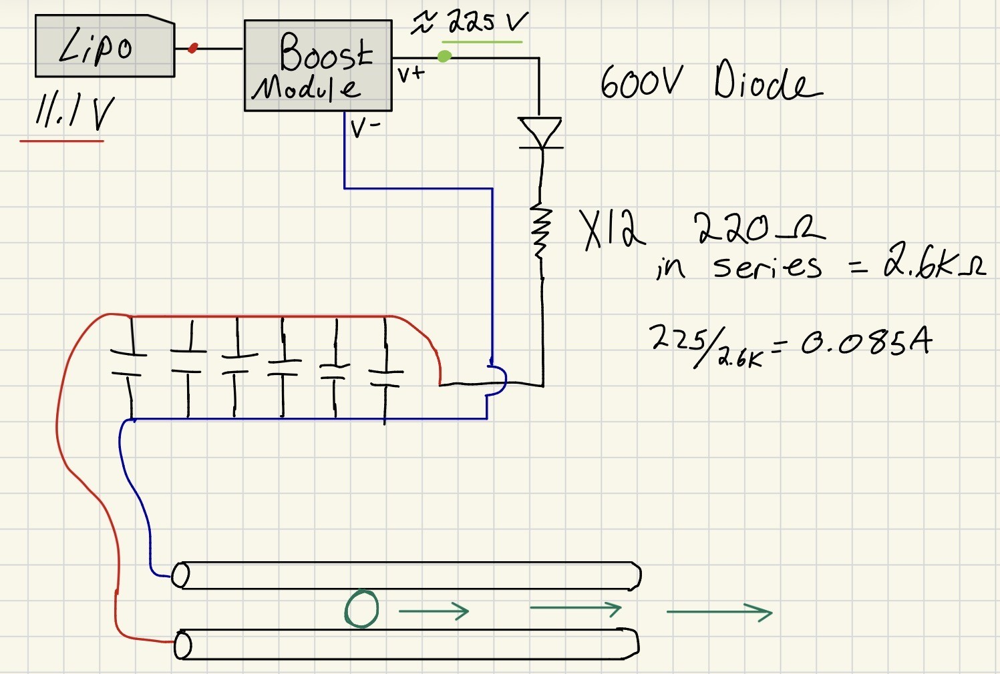
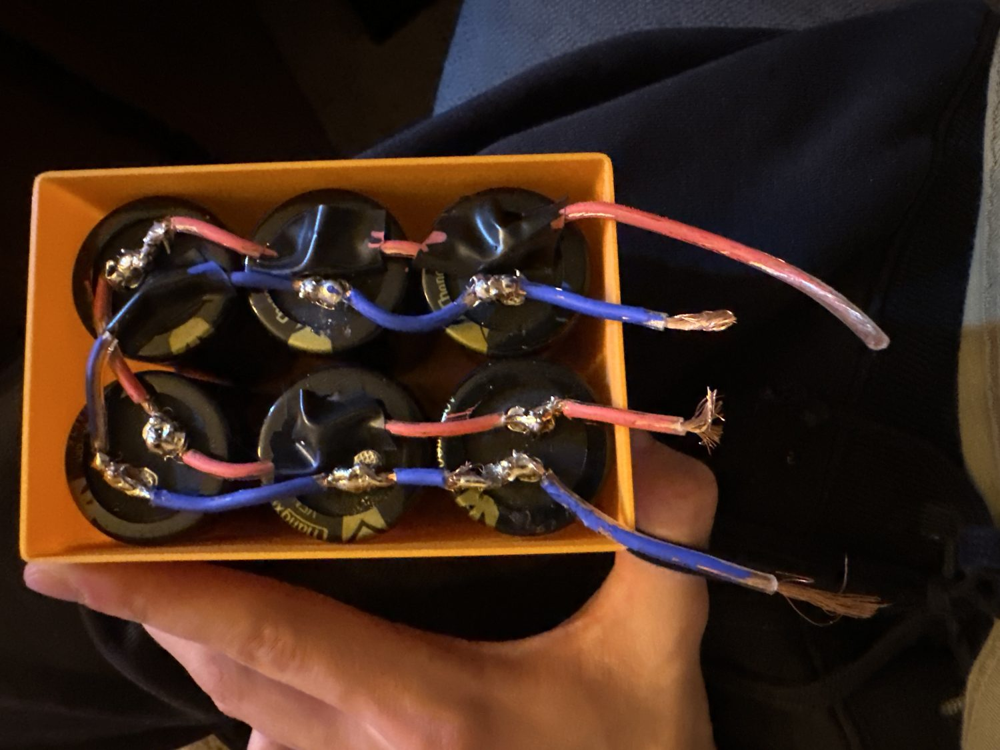
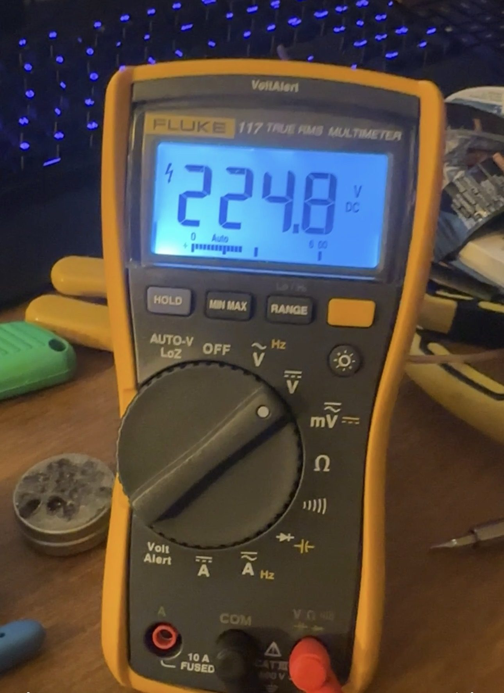
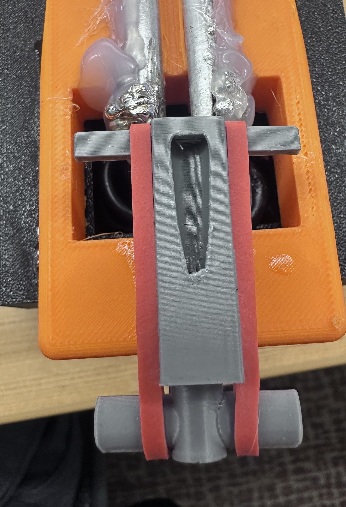
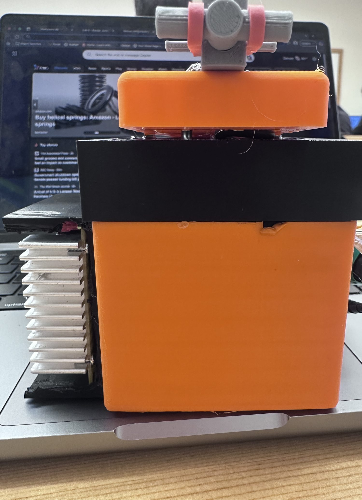

Power Electronics · High Voltage · Electromagnetics
Electromagnetic Rail Launcher

- Source
- 11.1 V, 2200 mAh LiPo (rechargeable, by design)
- Converter
- DC boost module (fuse, op-amps, transformer, trim pot)
- Storage
- 13,200 µF, six 250 V / 2200 µF electrolytics in parallel
- Energy
- E = ½CV² ≈ 0.5 × 0.0132 × 225² ≈ 330 J
- Inrush limit
- 12 × 220 Ω in series (2.64 kΩ) → 85 mA charge current
- Blocking
- 600 V diode ahead of the resistor bank
- Rails
- Two solid aluminum rods, steel BB armature
- Housing
- 3D printed
Goals
I wanted as much stored energy per dollar as possible, rails instead of a coil, a rechargeable battery, something safe to operate, and for it to actually work. The rails were the easy part. The hard part was getting 330 joules into a capacitor bank from a battery and releasing it without destroying the circuit that charged it.
How it works
Current runs up one rail, through the armature, and back down the other. The two rails carry current in opposite directions, so the magnetic field between them and the current through the projectile produce a Lorentz force that drives the armature down the rails. The force scales with current, so the whole design is about making a very large, very short current pulse, which is what the capacitor bank is for.

Protecting the charger
A discharged capacitor bank looks like a short circuit. If you connect a boost converter straight to 13,200 µF sitting at 0 V, the only thing limiting the current is parasitic resistance, and the converter dies on the first charge.
So the charge path goes through 2.64 kΩ, which holds the current to about 85 mA at 225 V. I used twelve 220 Ω resistors in series instead of one 2.6 kΩ part. The resistance is the same, but the power is spread across twelve resistors instead of one, so they survive repeated charging without burning up.
The 600 V diode sits before the resistors so the discharge can't go backwards into the converter when the capacitors dump.


What was hard
Connecting the rails to the supply wires was harder than I expected. Aluminum is hard to solder, and the joint has to carry the full discharge current without failing. Rail spacing was also tricky: too loose and the armature loses contact, too tight and it binds.
There are two main ways this kind of launcher fails. The first is rail erosion: the arc at the contact point eats the rail surface, so the rails get worse with every shot. The second is the armature welding itself to the rails. If the projectile starts from rest, the current arrives before it's moving and fuses it in place. The fix is to give it some initial speed so it's already sliding when the bank dumps.
Safety. 330 J at 225 V is dangerous, and a capacitor bank stays dangerous long after the supply is disconnected. Safety was one of the original goals, which is why it has an enclosed 3D-printed housing, a fused converter, and a set charge and discharge procedure.

